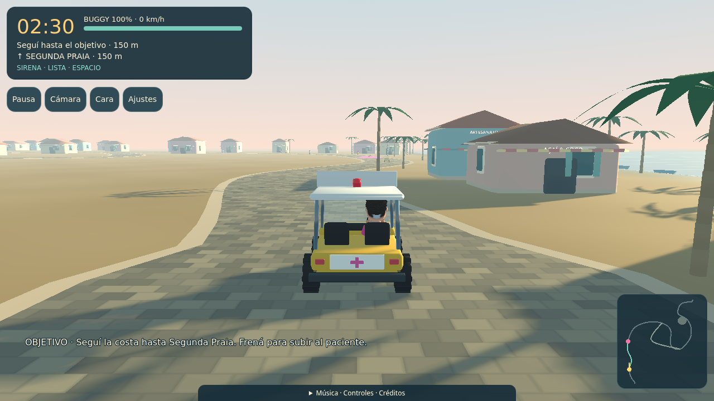
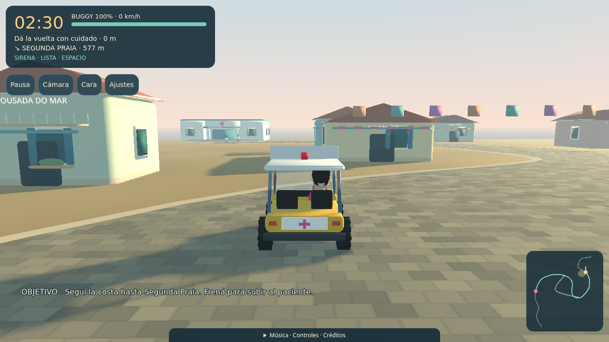
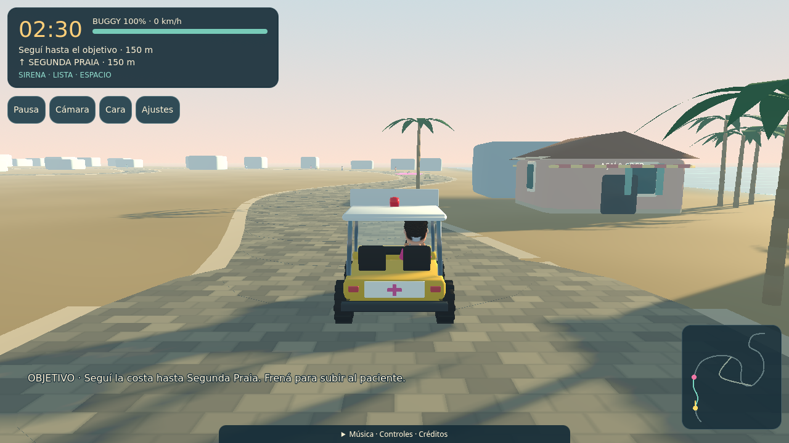
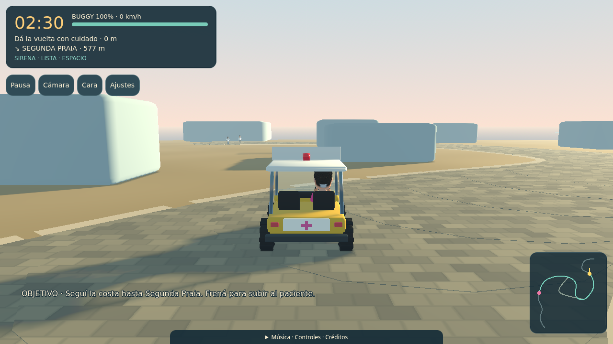

«Yo manejo» · Mundo completo
Recorrido nuevo de 954,4 m, 150 segundos y derrape automático. Estas capturas muestran la misma malla que se ejecuta en Godot, con semilla 27, calidad Alta y 1280×720.
Revisión humana del mundo pendiente. El primer tramo se revisó con capturas y recorrido antes de extender el acabado a comercio, plaza y puesto. La aprobación del rostro se conserva por separado.
Jugar versión local → · Versión tropical anterior · Personaje aprobado
 Disco: fachada, amigos y escala de calle.
Disco: fachada, amigos y escala de calle.
Primera curva: lectura del camino, vegetación y amanecer.Extensión al pueblo
Plaza con fuente y bancos, comercios con detalles cotidianos y llegada al puesto. Revisión técnica del primer tramo.
 Plaza · fuente, bancos y vegetación.
Plaza · fuente, bancos y vegetación. Puesto · acceso, señalización y personal esperando.
Puesto · acceso, señalización y personal esperando.Comparación con el prototipo
Plaza con el mismo encuadre que el prototipo:

Después · mundo completo.Referencia previa
Misma semilla, encuadres y resolución; conserva el arte provisional.

Primera curva antes de la extensión.
Plaza antes del acabado.